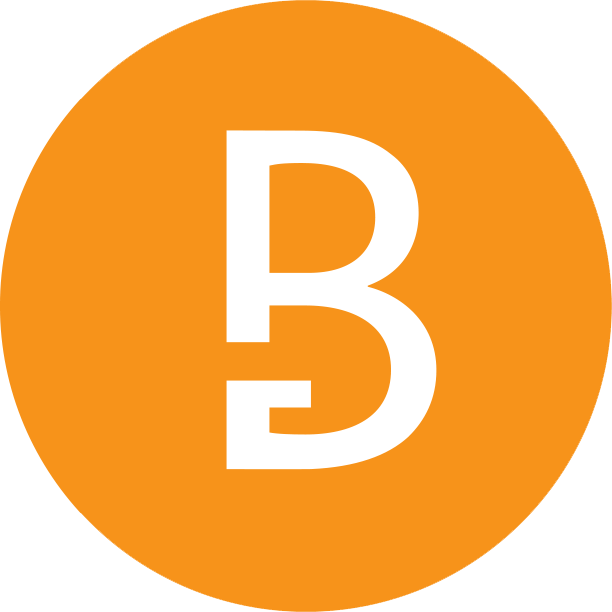

What is Bitgrin?
What is Bitgrin?
What is this new technology based on mimblewimble and bitcoin economics?
Let me briefly explain...
BitGrin makes transactions completely private, hiding the amount of coins a user owns, how many have been sent, and to whom they were sent.
Transactions are blinded, which means no-one can prove that coins have been sent at all!
BitGrin is private by design, even the developers don't know who is sending or receiving coins.
But how does it all actually work?
BitGrin is governed by the laws of mathematics, exploiting some very simple properties of addition and multiplication.
Elliptic curve cryptography is at the root of what keeps BitGrin (and Bitcoin) secure. The standard is also used by countless military, banking, and even government operations. Elliptic curve cryptography is a method of utilizing a secure curve to produce privately known numbers These extremely large numbers are nearly impossible to guess, but can be proven to have been generated by someone with knowledge of their private key.
Let me walk you through the process.
First, a user picks a really, really, really large number. Then they multiply it with the starting point on the curve.
The resulting coordinates on the curve are your public key and that really, really big number is your private key!
You can now securely encrypt values utilizing your private key, and publicly share your encrypted messages along with your public key. Other users in the world can *prove* that you must have knowledge of the correct private key, *without them knowing what it is*
And this is the bedrock of almost all cryptography. It keeps the whole world secure!
The trick here is that it's pretty easy to get the coordinates of your public key, but it's nearly impossible to discover another user's private key.
A simple analogy for elliptic curve cryptography
Knowing just the public key is like knowing the location of an indestructible box, with the world's most complicated lock. Without the private key, it is impossible to access it's contents.
This is where, for example, Bitcoin's security model ends.
BitGrin, on the other hand, goes a few steps further.
BitGrin hides your even your *public* key. So now no one even knows *where* your indestructible box is.
This means that no one can see how many coins you have, who you are sending coins to, or how many you have received.
All of this is accomplished using just a few additional mathematical tricks.
How Bitcoin transactions work
To further explain, let's first talk about how Bitcoin transactions work.
Lett’s say you, a Bitcoin user, want to send some funds to another user. You would announce publicly to the network your public key, the amount of coins you would like to send, and proof that demonstrates you are indeed the owner of these coins.
You can see the problem here -
If someone goes through the history of the blockchain, they can clearly see who you received the coins from, who you are sending them to, how many were sent, and even how many you have.
You don't really want people knowing all of that information, do you?
Do you share your bank statements with everyone? Of course not.
Now... How can we fix this? How can we make transactions more private?
How BitGrin transactions work
Let's go over a BitGrin transaction...
BitGrin transactions are completely different than Bitcoin transactions, You can think of them as just a blank credit card with no name, just the number, and everyone who knows this number can spend money with it.
What the blockchain holds is just a list of these "cards", while obscuring the amounts in them, and who is in possession of them, or even who had contents in them prior.
Let's say for example I want to send you three BitGrin.
What we need to do now is prove that I own a credit card (or multiple cards) with the total of at least 3 coins.
We also need to create a new card for you. One whose number is only known by you.
First, I send you a message via a secure channel in between our wallets.
"Hey, I want to send you 3 coins. Here's proof I own at least 3. I'll also pay the fee."
You receive the message and you can compute your part of what it takes to make a new card. Then you send me back the proof that you know the new credit card number,
while not revealing the number to me, by using a special type of encryption.
Next, you send me a very very big number you choose to obscure the amount of coins by moving them by this amount on the elliptical curve.
Then, add to it a public key of the credit card number, made with another operation on the graph.
This will prove you own the coins, without either user revealing their private keys.
Finally, I add the number of coins to the very big number you chose.
We can prove the number of coins didn't change because 5-5 is 0. This is validated by the network to prevent coins from being created out of thin air.
And 5 plus the BigNumber, minus 5 plus the BigNumber, is also zero. By adding a hidden big number known only to us, we hide the amount from everyone else.
I combined all these details together into one large commitment, and then submit it to the BitGrin network.
Now the network needs to validate that no new coins were created and that your new card is valid. This is all done with simple mathematics, and is completely secure.
You now received your money! While it may sound like a long process, all of it is done within less than 1 second from the BitGrin wallet.Want to spice things up? Generate invoices, transact using QR codes or send it by pigeons!
Scalability
We're not done yet. This is not all that BitGrin improves.
As you may know, BitCoin transactions can take a very long time to be confirmed, and running a Bitcoin node is a very computer-intensive process.
BitGrin on the other hand is both fast, and extremely scalable! The majority of spent transactions get removed, making the blockchain much smaller than traditional blockchains.
This is done by miners in every block, as well as the entire blockchain over time.
Soon, everyone will be able to download the entire blockchain and synchronize it within seconds or minutes, even on a low powered mobile device or a payment terminal at the local checkout.
With further work and research, BitGrin will improve even more, enabling truly private, scalable digital cash to see mass adoption.
All of this makes BitGrin the most private, scalable and truly decentralized cryptocurrency that ever existed! Aren't you as excited about that as we are? Join us. Let's change the world!